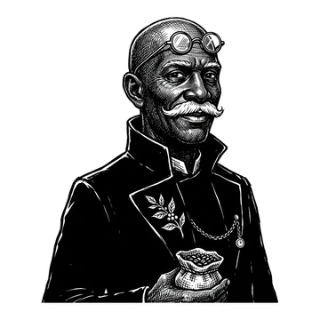
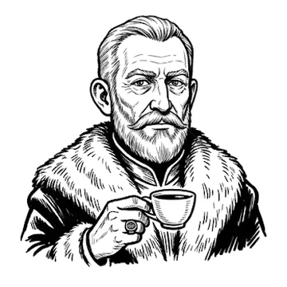
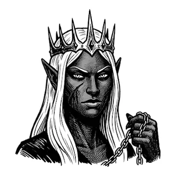
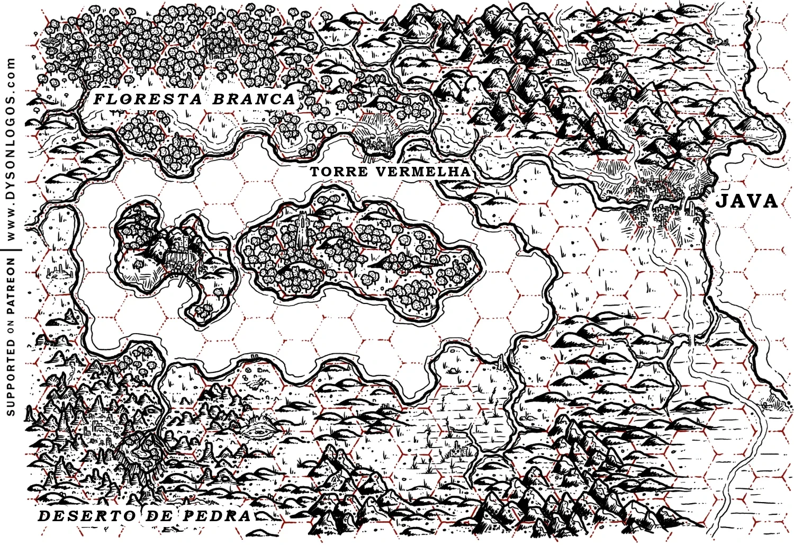
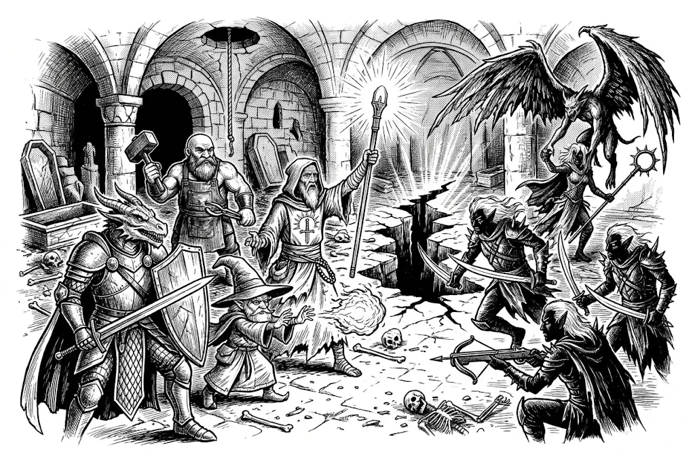

Aethelgard¶
Guia dos jogadores. Sistema: Forja RPG. O mundo foi criado pelo grupo na primeira sessão, com a Ficha de Mundo.
O Mundo¶
O Calendário¶
O Calendário de Aethelgard. O ano atual é 248.
| Nº | Mês | Lembra |
|---|---|---|
| 1 | Janvar | janeiro |
| 2 | Fevrar | fevereiro |
| 3 | Marcion | março |
| 4 | Abrel | abril |
| 5 | Maiel | maio |
| 6 | Junar | junho |
| 7 | Julvar | julho |
| 8 | Agoston | agosto |
| 9 | Setember | setembro |
| 10 | Otubrin | outubro |
| 11 | November | novembro |
| 12 | Dezember | dezembro |
Como escrever. Dia, mês e ano: 8 de November de 248.
Os Deuses¶
Por enquanto, o grupo criou uma só divindade. Todo sacerdote e paladino da campanha segue Woltander (veja Divindades).
Woltander¶
Deus da justiça, da luz e do sol nascente.
Java¶
A cidade inicial. Fica perto da costa e vive de exportar café.
Gente de Java¶
Quem o grupo já conhece.

O Barão de Java Senhor de Java. Manda em Java: nas fazendas de café e na sede.Tonho Centro de Distribuição. Trabalha no Centro, para onde vai o café antes de seguir para a costa. Discutiu com os trabalhadores que queriam tocar o negócio sozinhos.

Valdo Dovel Sumido. Dono do Centro de Distribuição e marido de Maren. Desapareceu, e ninguém achou o corpo nem rastro dele.Maren Dovel Sumida. Esposa de Valdo, o dono do Centro de Distribuição. Uma carta mostrou que ela vendia os vizinhos aos drows em troca de ouro. Ninguém sabe onde está.
Odo O moleiro, morto. Atacou o grupo nas criptas e morreu com uma flecha na cabeça. Um diabrete o possuía e saiu do corpo quando ele morreu.

Velistra Drow da Treva. Levava os moradores de Java pela fenda para virar escravos. Fugiu muito ferida, nas garras de um demônio alado.A Região¶
Uma região de Drayone. Java fica no leste, perto da costa, cercada pelas fazendas de café.

Mapa de Dyson Logos.
O Grupo¶
Para Onde Agora?¶
Java está em paz, por enquanto. O grupo escolhe o próximo destino. Os dois ficam no mapa da região.
Linha do Tempo¶
O que aconteceu em Aethelgard, em ordem. Inclui o que outras mesas fizeram no mesmo mundo.
| Data | O que aconteceu | Onde |
|---|---|---|
| 5 de November de 248 | O sino da capela toca sozinho pela primeira vez. | Java |
| 8 de November de 248 | O grupo cala o sino, mata os soldados drows e põe Velistra para correr. | Java |
Diário¶
Uma entrada por sessão, com a data na mesa e a data em Aethelgard.
Sessão 1: O Sino da Capela¶

O sino da capela abandonada tocava sozinho, e quem ouvia sumia. O grupo investigou o vilarejo e foi ao Centro de Distribuição de café. Maren Dovel, esposa do dono, também tinha sumido. Os trabalhadores queriam tocar o negócio sozinhos, e houve discussão com Tonho. Nos escritórios, o grupo achou uma carta: Maren vendia os vizinhos aos drows em troca de ouro. Ela sumiu, e ninguém sabe onde está.
As pistas levaram ao moinho: era por ali que os desaparecidos eram levados. O moinho estava cheio de farinha, com uma armadilha pronta para fazer tudo explodir. O grupo detonou a explosão antes da hora, de longe. O moinho veio abaixo para dentro e matou os ratos que estavam lá.
Por um canal sob o moinho, o grupo chegou às criptas da capela e enfrentou esqueletos. Odo, o moleiro, atacou o grupo e morreu com uma flecha na cabeça. Só então se viu que um diabrete o possuía: a criatura saiu do corpo quando ele morreu. Na cripta maior estava a drow Velistra, com um algoz e depois soldados drows. Velistra fugiu muito ferida. O grupo matou os soldados.
Ali havia uma fenda que era um portal para a Treva, as cavernas sob o mundo. Os drows levavam os moradores de Java por ela para virar escravos.
Espólio. O que havia com os drows e nos depósitos, e os pagamentos que Maren recebia. Cada um anotou o seu na ficha.